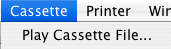
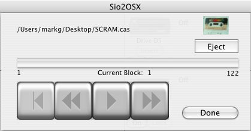

Cassettes
Introduction Serial Port Disk Drives Cassettes 850 Emulation
Printer Emulation Preferences Release History Credits
|
|
Sio2OSX
Help Cassettes Introduction Serial Port Disk Drives Cassettes 850 Emulation Printer Emulation Preferences Release History Credits |

This menu item will bring up the cassette Drive Display below.

This window allows you to control the emulated cassette drive on Sio2OSX. You may insert or remove a cassette image with the Insert/Eject button. When a cassette is inserted, the fast forward (last button on right) and rewind (second button from left) buttons may be used to change the tape position, and the counter will indicate where the tape is, in block count. To rewind all the way, you can use the first button from the left to go back to the start of the tape. To play the tape image, press the Play button (third button from left). The button will stay depressed and change to a green color. The tape image will begin playing, usually staring with the first InterBlock gap, which is quite long, so that the Atari computer may be setup to receive the cassette file (by pressing the space bar on the Atari). The image playback may be paused by pressing the play button again. When you are done playing back cassettes, the window may be closed by pressing the done button, and Sio2OSX will revert to disk/printer mode.